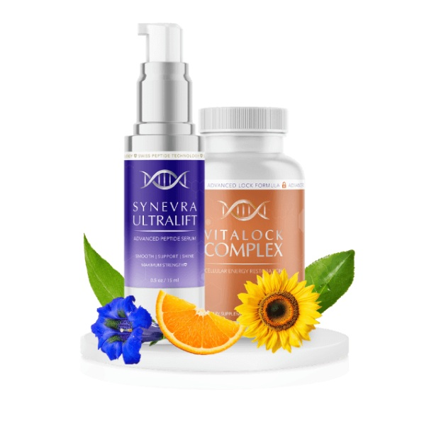
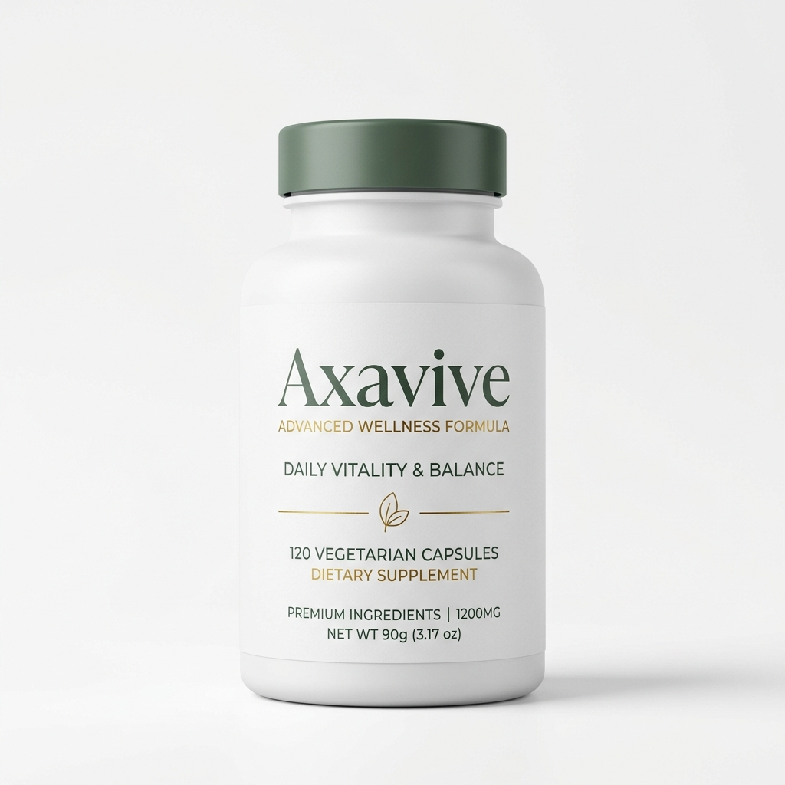

Estompez Rides, Taches et Cicatrices Grâce à la Science Clinique Ciblée
Nous avons évalué les formules dermatologiques de pointe aux peptides brevetés, inhibiteurs de mélanine et réparateurs tissulaires. Découvrez nos 7 soins cliniques d'excellence validés pour 2026.
100% Rédaction Indépendante • Formules Cliniques • Transparence Affiliation

Kollagen Intensiv™
Formule suisse au peptide breveté Syn-Coll conçue pour relancer la production naturelle de collagène et lisser les rides profondes.
Bénéficier de la Remise FabricantCatalogue Dermatologique Clinique 2026
Analyses cliniques indépendantes pour l'anti-âge, l'atténuation des taches et la réparation tissulaire.
Anti-Âge & Régénération du Collagène
Formules cliniques ciblant la synthèse de collagène, le relâchement des micro-tensions et la longévité cellulaire interne.
Kollagen Intensiv™
Le peptide suisse breveté Syn-Coll® stimule la synthèse naturelle de collagène de 354% pour combler les rides profondes et restaurer le rebond de la peau.

Synevra UltraLift™
Le complexe dipeptide SYN-AKE® détend les micro-contractions musculaires de 82% pour lisser les plis du front et les rides du sourire sans aiguille.

Axavive™
Nutricosmétique végétal avec Astragaloside IV et écorce de pin réactivant les signaux neuro-cutanés pour raffermir la peau depuis l'intérieur.
Taches Brunes & Hyperpigmentation
Inhibiteurs botaniques de tyrosinase conçus pour bloquer la surproduction de mélanine sans décapage chimique.

Illuminatural 6i™ Éclaircissant Avancé
Formulé avec 6 actifs végétaux agissant en synergie pour inhiber la tyrosinase et éliminer les cellules pigmentées, estompant taches solaires et mélasma sans hydroquinone.
Cicatrices, Acrochordons & Réparation Tissulaire
Traitements cliniques pour la réorganisation des cicatrices chirurgicales, le détachement naturel des acrochordons et le soin de la kératine des ongles.

Dermefface FX7®
Formulé avec 10% de Symglucan et Pro-Coll-One+ pour stimuler le collagène de Type I de 1.190%, accélérer le renouvellement cellulaire et lisser les cicatrices.

ReviTag™
Formule 99.8% végétale à l'Avoine Colloïdale et Argousier Oméga-7 déliant les fibres de collagène pour sécher les excroissances de frottement sans marque.

Kerassentials™
Huile liquide médicale à l'Acide Undécylénique (USP 5%) et arbre à thé pénétrant sous l'ongle pour éliminer les champignons et renforcer la kératine.
Comparez les Formules Côte à Côte
Examinez les concentrations de peptides actifs, les preuves cliniques de régénération, les garanties et les tarifs comparés à Synevra UltraLift, Axavive et SkinCeuticals sur notre page dédiée.
Ouvrir la Matrice Comparative 2026Quelle formule convient le mieux à votre peau ?
Répondez à 3 questions rapides pour recevoir une recommandation dermatologique adaptée parmi nos 7 soins cliniques évalués.
Question 1 sur 3 : Quel est votre objectif cutané prioritaire ?
Question 2 sur 3 : Quel format d'application correspond à votre routine ?
Question 3 sur 3 : Quelle est votre tranche d'âge ou niveau d'intensité ?
La Science des Ingrédients Actifs
Pourquoi les peptides brevetés et les actifs botaniques surpassent les lotions génériques.
Syn-Coll® (Palmitoyl Tripeptide-5)
Un peptide conçu pour stimuler le mécanisme naturel de production de collagène par activation du TGF-Bêta. Les essais cliniques montrent une hausse de 354% de la synthèse de collagène.
Alpha-Arbutine & Niacinamide
Issue de la busserole, l'Alpha-Arbutine inhibe la tyrosinase et stoppe la mélanine sans amincir la peau ni causer d'effets secondaires nocifs.
Hyaluronate de Sodium
Retient jusqu'à 1.000 fois son poids en eau, attirant l'hydratation dans les couches dermiques pour repulper instantanément les ridules.
Beurre de Karité & Extrait de Thé Vert
Riches en acides gras essentiels et antioxydants, protégeant la barrière cutanée contre les radicaux libres et l'oxydation UV.
Foire Aux Questions
La plupart des utilisateurs constatent une hydratation et une douceur améliorées en 7 à 14 jours avec Kollagen Intensiv. Pour les rides profondes, les taches avec Illuminatural 6i et les cicatrices avec Dermefface FX7, les résultats maximaux se manifestent entre 30 et 90 jours.
Oui. Combiner des sérums ciblés et des nutricosmétiques oraux est recommandé. Par exemple, appliquer Illuminatural 6i ou Kollagen Intensiv sur le visage tout en prenant Axavive par voie orale maximise l'efficacité.
Les 7 formules bénéficient de garanties sans risque. Skinception (Kollagen Intensiv, Illuminatural 6i, Dermefface FX7) et Axavive offrent 90 jours de garantie 100% remboursé. Synevra UltraLift, ReviTag et Kerassentials proposent 60 jours de garantie directe fabricant.
Oui. Toutes nos formules évitent les substances irritantes comme l'hydroquinone, le mercure, les stéroïdes et les parabènes. Nous conseillons de faire un test préalable de 24h sur l'intérieur du poignet.